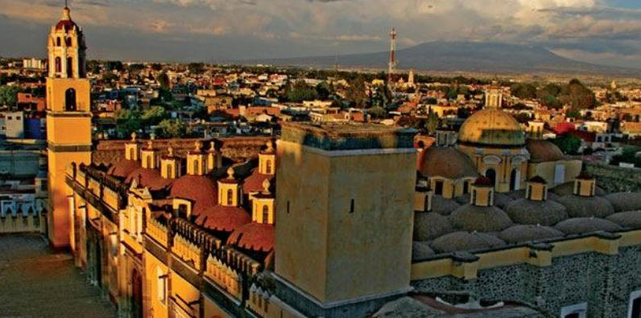

Este Pueblo Mágico de Puebla te sorprenderá con los restos de una antigua (y enorme) pirámide prehispánica que, después de la Conquista, sirvió como sustento para el Templo Los Remedios.
Cholula: Entre un gran templo prehispánico e iglesias coloniales
Cholula -formado por los poblados de San Andrés Cholula y San Pedro Cholula- recibe al visitante con una imagen única en México y el mundo: una estructura piramidal cubierta por follaje y coronada por una iglesia virreinal, custodiadas por el volcán Popocatépetl. En este Pueblo Mágico muy cercano a la ciudad de Puebla destacan sus múltiples templos de la época, de la Colonia (tantos que, se dice, hay uno por cada día del año), así como su exquisita gastronomía, su fina talavera y el agradable ambiente de provincia.
Fue fundada por grupos toltecas que fueron exiliados de Tula cerca del año 500 a.C., lo que la convierte en una de las poblaciones vivas más antiguas de América. Posteriormente los cholultecas fueron tributarios de los mexicas, pero se distinguieron históricamente por su ánimo independiente.
Cholula también es conocida por ser escenario de uno de los episodios más cruentos de la Conquista. En 1519 las fuerzas de Hernán Cortés, que habían sido recibidas por los locales, cometieron la infame Matanza de Cholula pues sospechaban una emboscada. Se calcula que murieron hasta 6,000 cholultecas, la mayoría de ellos civiles.
Compra talavera en el Taller de Talavera de la Reyna, donde conservan las técnicas de trabajo del siglo XVI aplicadas a diseños contemporáneos. Las piezas van desde azulejos, platos y vajillas, hasta jarrones, floreros, macetas y cazuelas.
San Pedro Cholula se destaca por su alfarería de barro rojo, los árboles de la vida y las vajillas. Debido a las festividades religiosas a lo largo del año, Cholula también es conocida por la manufactura de artículos pirotécnicos como toritos, cascadas y castillos. Puedes conseguir estos productos en el Centro Artesanal, Cultural y Gastronómico Xelhua.
Hay tantas iglesias y templos en Cholula que se dice que hay uno por cada día del año.
Este poblado, de de evidente influencia italiana, se encuentra a aproximadamente media hora en auto (unos 18 kilómetros). Ahí podrás disfrutar de quesos, miel y carnes frías de producción artesanal.
El “lugar de nuestra madrecita”, se encuentra apenas a cuatro kilómetros al sur de Cholula. Vale la pena visitar la iglesia de Santa María Tonanzintla, una joya del barroco mexicano. En el interior del templo hay una cúpula repleta de figuras de niños con motivos indígenas como penachos, frutas, mazorcas y cuernos de la abundancia. La nave está decorada con chapa de oro. Además, este poblado ofrece una vista espectacular del volcán Popocatépetl, así como cielos llenos de estrellas (no por nada la localidad es sede del Observatorio Astrofísico Nacional de Tonanzintla).
Del 1 al 8 de septiembre se lleva a cabo la fiesta de la Virgen de los Remedios, la más importante para los cholultecas. Hay danzas rituales con grupos de concheros, ofrendas para la virgen y quema de panzones (grandes estructuras de cartón con forma humana). Tras la veneración a la virgen, los peregrinos realizan un trueque de productos como queso, frutas, ocote, incienso y nueces de la región. Es una manifestación cultural que data de tiempos prehispánicos y que vale la pena atestiguar.
Cholula cuenta con una buena oferta gastronómica que va desde las tiendas gourmet hasta restaurantes de cadenas internacionales. Pero nada como beber una cerveza y comer botanas típicas en la plaza principal. Entre los platillos de la región se encuentran la sopa cholulteca (a base de poro, tocino y pollo), la cecina con rajas, los gusanos conocidos como “cueclas” y las “orejas de elefante”, tortillas de grandes dimensiones rellenas con frijoles y coronadas con salsa, queso y cebolla.
No puedes irte sin desayunar en el mercado. Los lugareños utilizan ingredientes frescos para preparar antojitos típicos como sopes y quesadillas, así como sin comer mole poblano.
| # | Camión | Avión | Auto |
|---|---|---|---|
| Tiempo | 2 hrs | - | 1 hr 30 min |
| Costo | $700 | - | $500 |
| Corridas | 3 al día | - | - |